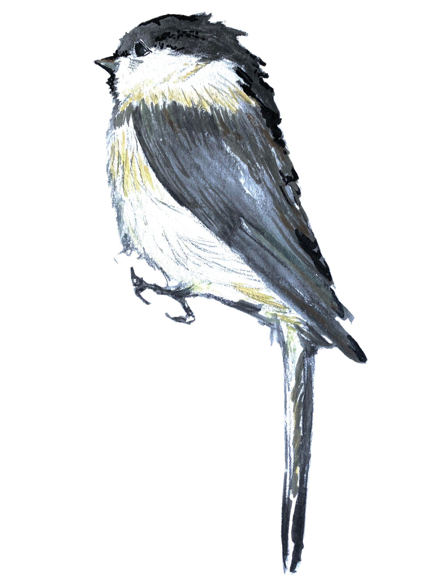
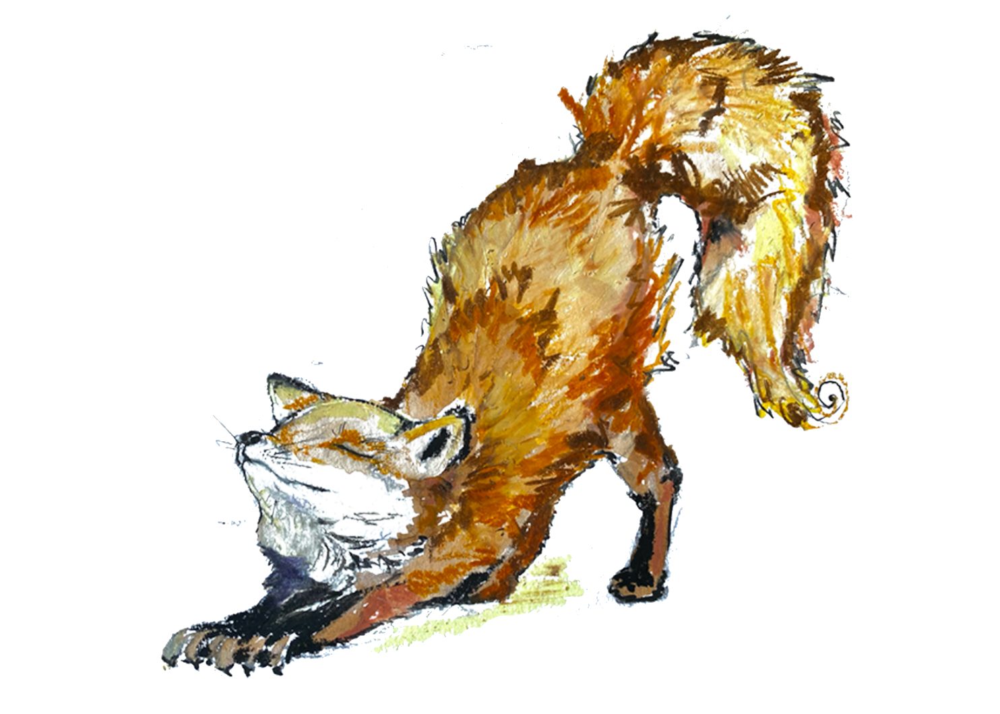
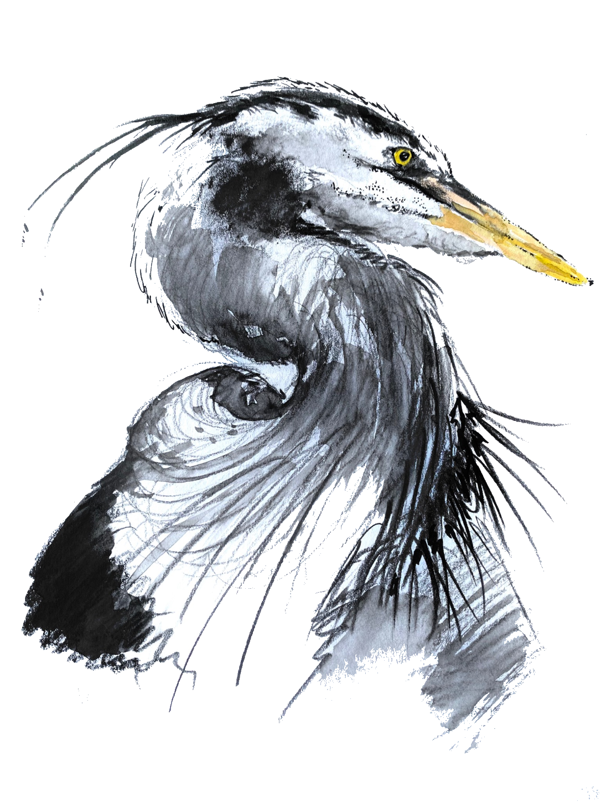
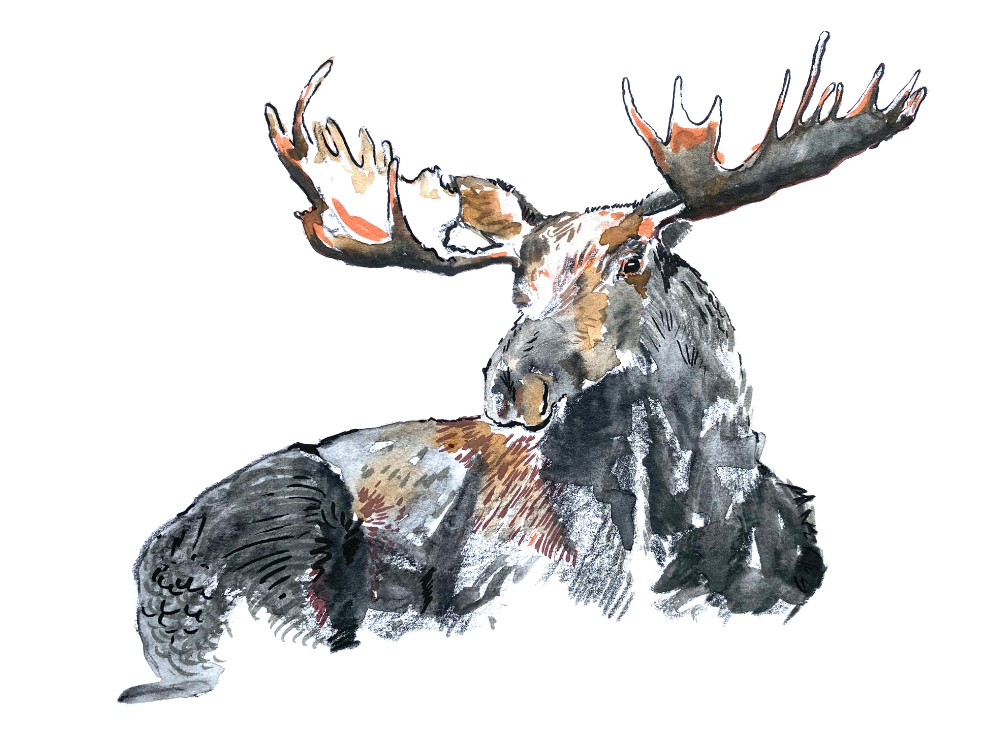
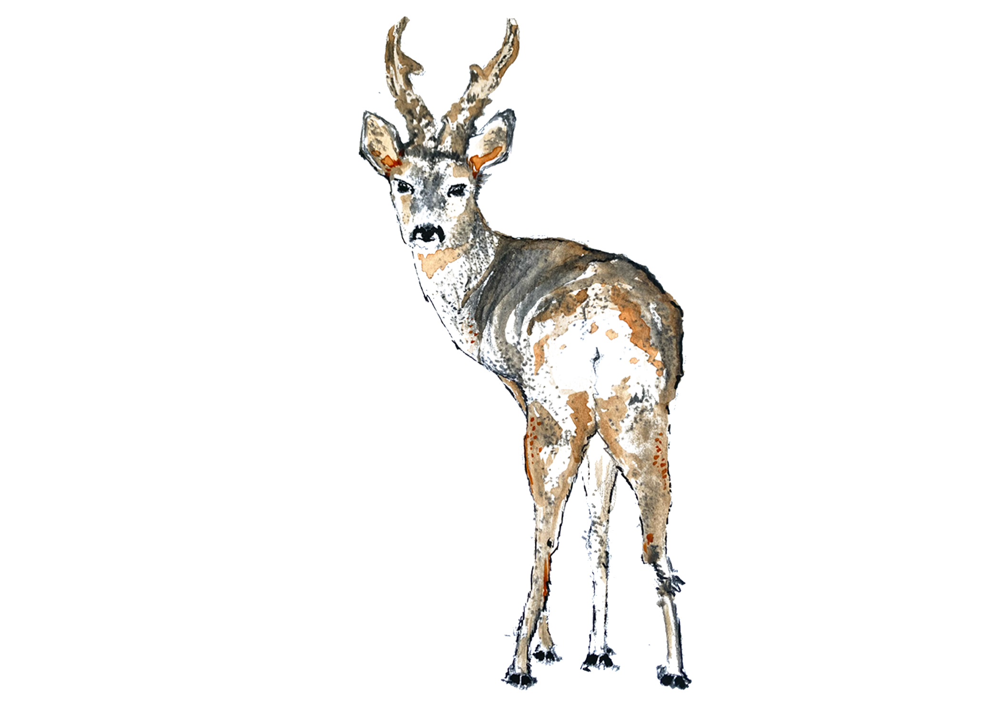
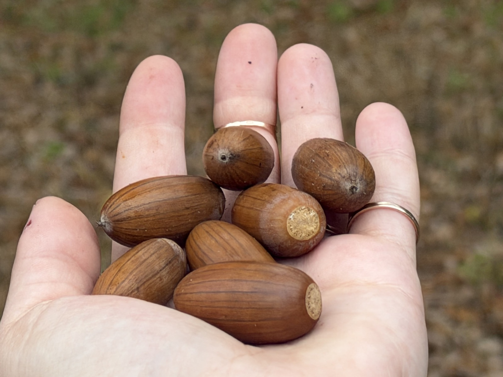
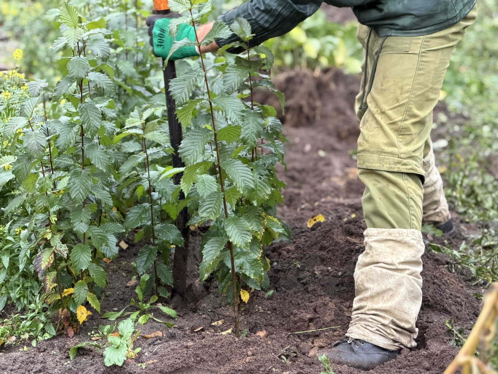
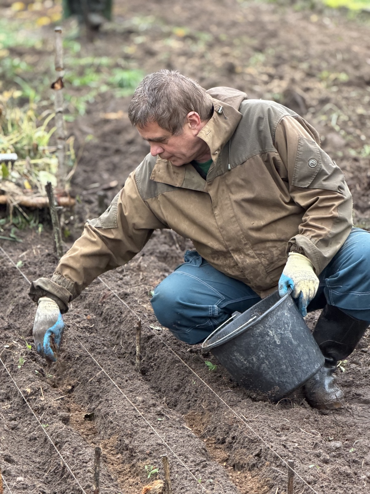
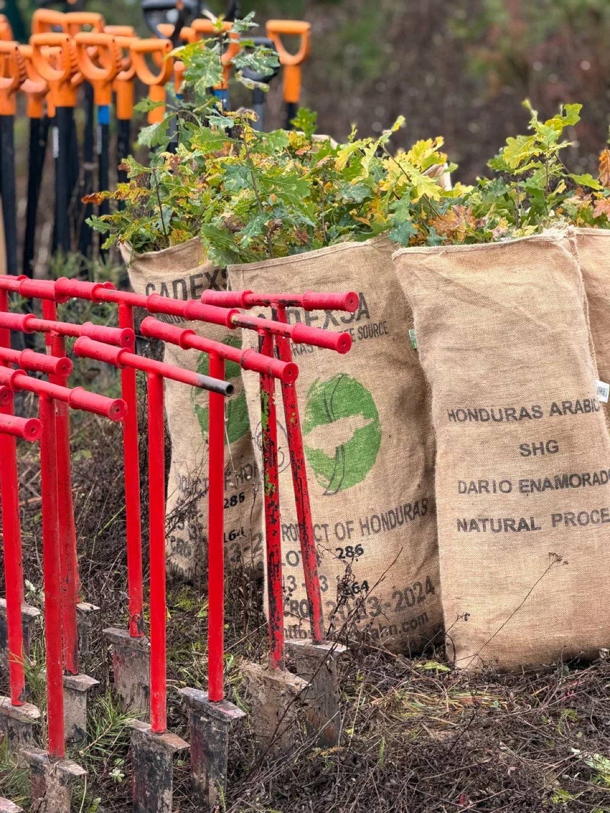

2027 · ДЕТИ ЛЕСА
2027 · ДЕТИ ЛЕСА
Подарите животным лес






Нажми, чтобы поймать зверюшку
Лес уже растёт. Вместе с вами.
в «Угре»
посадку
Лес — это забота круглый год
Ваше регулярное пожертвование помогает планировать эту работу.

Зима
Саженцы зимуют на грядках. Мы рассказываем, как помочь лесу.

Весна
Готовим саженцы к пересадке.

Лето
Выращиваем саженцы в питомнике.

Осень
Сажаем
новый лес.
На что пойдёт ваше пожертвование

Питомник и саженцы
Выращиваем крепкие местные деревья.
Посадки и уход
Сажаем лес и помогаем молодым деревьям прижиться.
Защита молодого леса
Снижаем риски пожаров и других угроз.